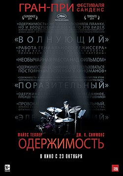
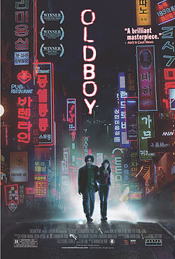
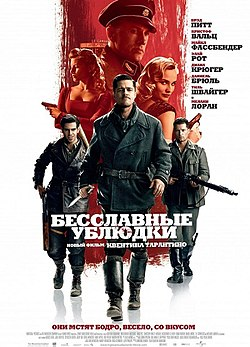
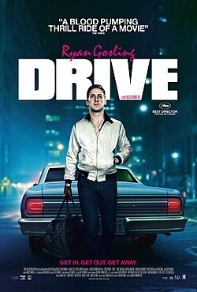

Подборка фильмов
Введение
Привет, друзья! Сегодня я расскажу вам мои любимые фильмы
Одержимость
Эндрю мечтает стать великим. Казалось бы, вот-вот его мечта осуществится. Юношу замечает настоящий гений, дирижер лучшего в стране оркестра. Желание Эндрю добиться успеха быстро становится одержимостью, а безжалостный наставник продолжает подталкивать его все дальше и дальше – за пределы человеческих возможностей. Кто выйдет победителем из этой схватки?
Олдбой
1988 год. Обыкновенный и ничем непримечательный бизнесмен О Дэ-cу в день трёхлетия дочери по пути домой напивается, начинает хулиганить и закономерно попадает в полицейский участок. Из участка его под своё поручительство забирает друг детства. Пока тот звонит жене незадачливого пьяницы, О Дэ-су пропадает. Неизвестные похищают его и помещают в комнату без окон на 15 лет.
Бесславные ублюдки
Вторая мировая война. В оккупированной немцами Франции группа американских солдат-евреев наводит страх на нацистов, жестоко убивая и скальпируя солдат.
Драйв
Великолепный водитель – при свете дня он выполняет каскадерские трюки на съёмочных площадках Голливуда, а по ночам ведет рискованную игру. Но один опасный контракт – и за его жизнь назначена награда. Теперь, чтобы остаться в живых и спасти свою очаровательную соседку, он должен делать то, что умеет лучше всего – виртуозно уходить от погони.
Интерстеллар
Когда засуха, пыльные бури и вымирание растений приводят человечество к продовольственному кризису, коллектив исследователей и учёных отправляется сквозь червоточину (которая предположительно соединяет области пространства-времени через большое расстояние) в путешествие, чтобы превзойти прежние ограничения для космических путешествий человека и найти планету с подходящими для человечества условиями.